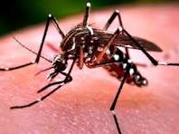

Mosquito Aedes Egypti
Descrição do mosquito Aedes aegypti:
O Aedes aegypti é um mosquito pequeno, com cerca de 7 milímetros de comprimento, de cor escura e listrado. Ele é reconhecido por suas características físicas distintas, incluindo o padrão de listras brancas e pretas em suas pernas e corpo. O mosquito fêmea é responsável pela transmissão de doenças como dengue, zika e chikungunya, enquanto o macho se alimenta exclusivamente de néctar de plantas. O Aedes aegypti é uma espécie urbana e prefere habitar áreas próximas a habitações humanas, onde encontra condições ideais para se reproduzir e se alimentar de sangue humano.
Imagens e diagramas detalhados são essenciais para ajudar na identificação do Aedes aegypti e compreensão de sua anatomia. As fotografias podem destacar as características físicas distintas do mosquito, como suas listras pretas e brancas e seu formato corporal característico. Diagramas anatômicos podem fornecer uma visão mais detalhada das diferentes partes do corpo do mosquito, incluindo cabeça, tórax, abdômen, asas e pernas. Essas representações visuais são úteis para educar o público sobre como identificar o mosquito transmissor de doenças e tomar medidas preventivas adequadas.
Informações sobre os hábitos de reprodução do Aedes aegypti e como evitar a proliferação:
O Aedes aegypti possui hábitos preferenciais de reprodução em locais com água limpa e parada, onde pode depositar seus ovos em recipientes como pneus descartados, vasos de plantas, recipientes de água não utilizados e até mesmo em pequenas poças de água da chuva acumulada. Esses locais fornecem um ambiente ideal para o desenvolvimento das larvas do mosquito, que emergem rapidamente após o contato com a água. Uma única fêmea do Aedes aegypti pode depositar centenas de ovos de uma vez, aumentando significativamente o potencial de infestação em uma área. Para evitar a proliferação do mosquito, é essencial eliminar ou modificar esses criadouros potenciais, esvaziando e limpando regularmente recipientes que possam acumular água e mantendo-os devidamente fechados ou virados para baixo. Além disso, medidas como a instalação de telas em janelas e portas e o uso de mosquiteiros em camas podem ajudar a reduzir a exposição ao mosquito e prevenir picadas.

A participação ativa da comunidade é fundamental para o sucesso das iniciativas de controle do Aedes aegypti, e campanhas de sensibilização e educação devem ser realizadas regularmente para promover o engajamento e a adoção de práticas preventivas. Em áreas onde a infestação pelo mosquito é especialmente alta, programas de controle integrado, que combinam medidas de controle larvário e adulticida, podem ser implementados para reduzir a população de mosquitos e interromper o ciclo de transmissão de doenças. É importante ressaltar que a prevenção da dengue e outras doenças transmitidas pelo Aedes aegypti é uma responsabilidade compartilhada por todos, e cada indivíduo pode desempenhar um papel significativo na proteção da saúde pública ao adotar medidas simples, como a eliminação de criadouros do mosquito em sua própria casa e na comunidade.
Explicação sobre como o mosquito transmite doenças como dengue, zika e chikungunya:
O Aedes aegypti transmite várias doenças virais, incluindo dengue, zika e chikungunya. Quando o mosquito fêmea pica uma pessoa infectada com um desses vírus, ele ingere o vírus junto com o sangue da pessoa. Dentro do corpo do mosquito, o vírus se replica e se multiplica rapidamente, infectando as células do inseto. Após um período de incubação dentro do mosquito, que geralmente varia de alguns dias a uma semana, o vírus se espalha para as glândulas salivares do mosquito, onde fica pronto para ser transmitido a uma nova pessoa. Quando o mosquito pica uma pessoa saudável para se alimentar de sangue, ele injeta sua saliva, que contém o vírus, no sistema circulatório da pessoa, infectando-a. Uma vez dentro do corpo humano, o vírus se replica e pode causar uma variedade de sintomas, dependendo do tipo de vírus e da resposta imunológica do hospedeiro. Por exemplo, o vírus da dengue pode causar sintomas como febre alta, dores de cabeça intensas, dores musculares e articulares, além de complicações graves, como hemorragias e choque.
O vírus da zika, por sua vez, está associado a sintomas como febre baixa, erupções cutâneas, dores nas articulações e, em casos raros, complicações neurológicas, como a síndrome de Guillain-Barré em adultos e microcefalia em bebês nascidos de mães infectadas durante a gravidez. Já o vírus da chikungunya pode causar sintomas semelhantes aos da dengue, incluindo febre alta, dores articulares intensas e erupções cutâneas, que podem persistir por semanas ou meses após a infecção. A transmissão dessas doenças por mosquitos como o Aedes aegypti pode ocorrer durante todo o ano em áreas onde o mosquito é endêmico, e a prevenção da picada de mosquito é fundamental para reduzir o risco de infecção. Medidas de controle do vetor, como eliminação de criadouros e uso de repelentes, são essenciais para prevenir a propagação dessas doenças e proteger a saúde pública.
Medidas de controle do mosquito, como o uso de inseticidas e a eliminação de água parada:
O controle do mosquito Aedes aegypti é fundamental para reduzir a propagação de doenças como dengue, zika e chikungunya. Uma das principais medidas de controle é a eliminação de criadouros potenciais onde o mosquito possa depositar seus ovos e as larvas possam se desenvolver. Isso envolve inspecionar regularmente áreas ao redor de residências, escolas e locais de trabalho para identificar e remover recipientes que possam acumular água parada, como vasos de plantas, pneus velhos, garrafas plásticas e caixas d'água descobertas. Além da eliminação de criadouros, o controle do mosquito também pode envolver o uso de inseticidas para matar larvas e adultos do mosquito. Larvicidas são produtos químicos aplicados em água estagnada para matar as larvas do mosquito antes que elas se desenvolvam em adultos. Já os adulticidas são produtos aplicados em áreas externas para matar os mosquitos adultos que estão voando. No entanto, o uso de inseticidas deve ser feito com cuidado e de acordo com as recomendações das autoridades de saúde, para evitar impactos negativos na saúde humana e no meio ambiente.
Além das medidas de controle do vetor, a proteção individual contra picadas de mosquito também é importante para reduzir o risco de infecção por doenças transmitidas por mosquitos. Isso inclui o uso de repelentes de insetos, vestir roupas que cubram a maior parte do corpo e instalar telas em janelas e portas para impedir a entrada de mosquitos em ambientes internos. A conscientização pública sobre as medidas de controle do mosquito e a importância da participação ativa da comunidade são fundamentais para o sucesso das iniciativas de combate à dengue e outras doenças transmitidas pelo Aedes aegypti. Campanhas de educação e sensibilização devem ser realizadas regularmente para informar a população sobre como prevenir a proliferação do mosquito e proteger sua saúde e a de suas famílias. Em resumo, a eliminação de criadouros, o uso adequado de inseticidas e a proteção individual são componentes essenciais de um programa abrangente de controle do mosquito, que visa reduzir a incidência de doenças transmitidas por mosquitos e promover a saúde pública.